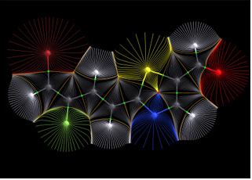

¿Qué es la Física?
Marcos Teóricos
La física, del griego fisis («naturaleza»), es la ciencia natural que estudia, mediante leyes fundamentales, la energía, la materia, el tiempo y el espacio, es decir, el universo mismo.La física es una de las disciplinas académicas más antiguas, cuyas raíces se remontan a los inicios de la civilización, cuando el hombre empezó a tratar de entender las fuerzas que regían el mundo a su alrededor.
Mecánica clásica:Se ocupa de los movimientos perceptibles en cuerpos macroscópicos, cuyas velocidades son muy pequeñas en comparación con la velocidad de la luz.
Mecánica Relativista:Sustentada en los desarrollos teóricos de Albert Einstein durante el siglo XX, se asemeja a la clásica en su carácter determinista. Sin embargo, la mecánica relativista describe fenómenos que se encuentran dentro del marco de la teoría de la relatividad especial, que describe el comportamiento de los cuerpos que se mueven a velocidades cercanas a la de la luz; y de la Teoría general de la relatividad, que es una formulación teórica para el campo gravitatorio (gravedad).
Mecánica Cuántica:Estudia sistemas de muy pequeña escala, como los átomos y las partículas elementales. Describe sus interacciones mediante las tres fuerzas que imperan a estas escalas: la fuerza fuerte, débil y electromagnética.
Teoría Cuántica de CamposEs un formalismo matemático para describir la mecánica cuántica tratando a las partículas como campos. Resulta muy útil, por ejemplo, a la hora de estudiar el campo electromagnético. En la mecánica cuántica, se se describe al campo electromagnético como un conjunto de partículas elementales llamadas fotones. La teoría cuántica de campos, por otra parte, lo trata como un sistema de campos continuos.


Se trata de una disciplina tanto teórica (describe las leyes del universo) como experimental (pone en práctica de hipótesis respecto a dichas leyes), y se adhiere al modelo de comprobación y legitimación impulsado por el método científico. Es una de las ciencias fundamentales o centrales que existen, y dentro de su campo de estudio convergen a menudo la química, la biología y la electrónica, entre otras.
Inicialmente la física formaba parte, como tantas otras ciencias, de la filosofía o la filosofía natural de la antigüedad, pero a partir de la Revolución Científica del siglo XVII surgió como un campo independiente, interesado en las leyes fundamentales de la realidad y empleando el lenguaje formal de las matemáticas para expresarlas. En la actualidad, en cambio, la física es una de las disciplinas que más contribuye con el cambio del paradigma científico, industrial y tecnológico.

¿Qué estudia la Física?
La física se ocupa de las leyes fundamentales del universo, es decir, de entender y describir la mecánica con que el universo opera. Estas leyes se describen mediante cuatro interacciones fundamentales:
Gravedad. La fuerza de atracción existente entre dos o más cuerpos masivos (que tienen masa). Cuanto más masivos son los cuerpos, más intensa es la fuerza y más alcance tiene su efecto.
Electromagnetismo. La fuerza de atracción o repulsión que se manifiesta entre partículas cargadas eléctricamente.
Fuerzas nucleares débiles. También llamada interacción débil, es una fuerza que existe entre partículas fundamentales, es de muy corto alcance y es la responsable de los decaimientos atómicos y de la radiactividad.
Fuerzas nucleares fuertes. Es una fuerza de atracción que mantiene unidos a los neutrones y los protones en el núcleo del átomo, venciendo la repulsión electromagnética entre estos últimos (cargados positivamente).
Un poco de historia
Regresar a la página principal, haga clic aquí:

Más información de química, haga clic aquí:

Más información de biología, haga clic aquí:

La historia de la física abarca los esfuerzos y estudios realizados por las personas que han tratado de entender el porqué de la naturaleza y los fenómenos que en ella se observan: el paso de las estaciones, el movimiento de los cuerpos y de los astros, los fenómenos climáticos, las propiedades de los materiales, entre otros. Gracias a su vasto alcance y a su extensa historia, la física es clasificada como una ciencia fundamental. Esta disciplina científica se puede dedicar a describir las partículas más pequeñas o a explicar cómo nace una estrella.
La mayoría de las civilizaciones de la antigüedad trataron desde un principio de explicar el funcionamiento de su entorno; miraban las estrellas y pensaban cómo ellas podían regir su mundo. Esto llevó a muchas interpretaciones de carácter más filosófico que físico; no en vano en esos momentos a la física se le llamaba filosofía natural. Muchos filósofos se encuentran en el desarrollo primitivo de la física, como Aristóteles, Tales de Mileto o Demócrito, ya que fueron los primeros en tratar de buscar algún tipo de explicación a los fenómenos que les rodeaban. Las primeras explicaciones que aparecieron en la antigüedad se basaban en consideraciones puramente filosóficas, sin verificarse experimentalmente. Algunas interpretaciones equivocadas, como la hecha por Claudio Ptolomeo en su famoso Almagesto —«La Tierra está en el centro del Universo y alrededor de ella giran los astros»— perduraron durante miles de años. A pesar de que las teorías descriptivas del universo que dejaron estos pensadores eran erradas en sus conclusiones, estas tuvieron validez por mucho tiempo, casi dos mil años, en parte por la aceptación de la Iglesia católica de varios de sus preceptos, como la teoría geocéntrica.